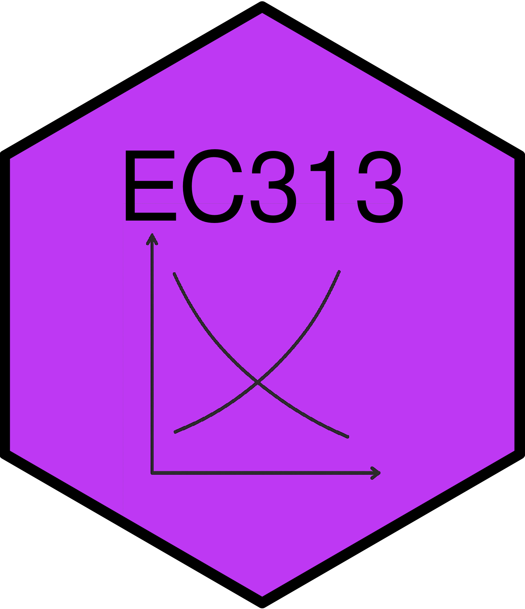

Tax Incidence
EC313 - Public Economics: Taxation
Justin Smith
Wilfrid Laurier University
Fall 2025

Goals of This Section
Goals of This Section
Outline different types of taxes
Discuss different between statutory and economic incidence of a tax
Show how tax incidence depends on elasticities of supply and demand
Expand on tax incidence in various markets
Types of Taxes
Introduction
There are many different types of taxes
Taxes can have different goals
- Raise revenue for government spending
- Change behaviour of individuals or firms
- Redistribute resources
They can also have different bases, structures, and rates
- Base: what is being taxed (e.g. income, consumption, property)
- Structure: how the tax is applied (e.g. progressive, regressive, flat)
- Rate: how much is being taxed (e.g. percentage, fixed amount)
Below we cover some of the most common types of taxes
Taxes on Income
Income Tax: tax on income earned during the year
Can be levied on individuals or corporations
For individuals, includes but not limited to
- Labour market earnings
- Capital gains
- Investment income (e.g. from dividends, interest, property)
- Pensions and retirement income (e.g. RRSPs)
- Some government benefits (e.g. employment insurance)
- Other taxable benefits (e.g. premiums paid by employer for group life insurance)
Taxes on Income
For corporations, includes but not limited to
- Active business income from sales or goods and services
- Investment income
- Capital gains
- Some government grants
- Depends on the size of your business
- Small business pay a lower rate
Payroll Taxes
Payroll Taxes: taxes levied on employment income
- Paid by both employers and employees
Used to finance social insurance and public pension programs
- Examples: Employment Insurance (EI), Canada Pension Plan (CPP), worker compensation
Payroll taxes vary by province
- Some charge a health tax (e.g. BC Employer Health Tax)
- Manitoba charges a levy for health and postsecondary education
These are different from the general income tax
Consumption Taxes
Consumption Tax: a tax paid on consumption of goods and services
Taxes generally charged by a seller at point of sale
- They remit these funds to the government
Examples:
- Sales tax (e.g. GST, HST, PST)
- Excise taxes (e.g. gasoline, alcohol, tobacco)
- Tariffs (tax on imports)
Wealth Taxes
Wealth Taxes: taxes on the value of an asset
Typical wealth taxes include
- Property tax (tax on value of land/buildings)
- Estate tax (tax on value of estate at death)
- General wealth tax (tax on total value of assets owned)
Estate taxes and general wealth taxes are not used in Canada
Property taxes are a major source of revenue for municipal governments
Statutory vs Economic Incidence of a Tax
Introduction
The question of who “pays” a tax is more complicated than it seems
Example: in Canada, there is a federal $0.10/litre tax on gasoline
- Gasoline stations include this in their price
- They remit the tax to the government
- Does the seller or the consumer pay?
This section will clarify who pays a tax
Separate between statutory and economic incidence of a tax
My view: this is the most important concept we teach in this program
Statutory vs Economic Incidence of a Tax
Statutory Incidence: who is legally responsible for paying the tax to the government
In the gasoline tax example, the statutory incidence is on the gasoline station
- They send a cheque to the government
Economic Incidence: the change in real income brought about by the tax
In the gasoline tax example, the economic incidence can be shared between the gasoline station and the consumer
- The gasoline station may less revenue per litre sold
- The consumer may pay a higher price per litre purchased
Statutory vs Economic Incidence of a Tax
Example: $0.10/litre tax on gasoline
Before tax is imposed, suppose price is $1.00/litre
- Consumers pay $1.00/litre, gas station receives $1.00/litre
Then government levies $0.10/litre tax on gasoline station
- Suppose gasoline station raises price to $1.10/litre
- Consumer pays $1.10/litre
- Gas station keeps $1.00/litre, remits $0.10/litre to government
In this case, the consumer bears the entire economic incidence of the tax
- Gasoline station receives same revenue per litre as before tax
- Consumer pays $0.10/litre more than before tax
Statutory vs Economic Incidence of a Tax
Example 2: $0.10/litre tax on gasoline
Same $0.10/litre tax on gas station
- Suppose gas station raises price to $1.05/litre
- Consumer pays $1.05/litre
- Gas station keeps $0.95/litre, remits $0.10/litre to government
In this case, the consumer and gas station share the economic incidence of the tax
- Gas station receives $0.05/litre less than before tax
- Consumer pays $0.05/litre more than before tax
Statutory vs Economic Incidence of a Tax
Key lesson is that statutory incidence does not determine economic incidence
- In example, statutory incidence is always on the gas station
- Economic incidence depends on how much of the tax is passed on to consumers in the form of higher prices
- Gas station could pass on all, some, or none of the tax to consumers
Statutory incidence says nothing about economic incidence
To determine economic incidence, we need to look at underlying economic forces
Commodity Taxes in Partial Equilibrium Models
Unit Tax on Sellers - Graphical

Take gasoline tax example one more time
On right is demand and supply of litres of gasoline
Without tax, price and quantity are determined where demand and supply are equal
Price is \(P_{0}\)
Quantity is \(Q_{0}\)
Unit Tax on Sellers - Graphical

Now government levies a per unit tax \(t\) (e.g. $0.10/litre) on gasoline
Tax is levied on sellers (statutory incidence)
This shifts the supply curve up by the amount of the tax
- New supply curve is \(S'\)
- At each quantity, sellers want to charge \(t\) more to cover the tax
New equilibrium is where \(S'\) intersects \(D\)
Unit Tax on Sellers - Graphical
The tax introduces a tax wedge
- Difference between what consumers pay and what producers receive from a transaction
Consumers pay the equilibrium price \(P_{g}'\)
- Price includes the tax
Producers receive \(P_{n}' = P_{g}' - t\)
- They remit \(t\) for every unit sold
Quantity falls to \(Q'_{1}\)
Unit Tax on Sellers - Graphical
In example above, economic incidence is shared equally between consumers and producers
- Consumers pay \(P_{g}' - P_{0}\) more than before tax
- Producers receive \(P_{0} - P_{n}'\) less than before tax
- These amounts are equal
Equal economic incidence is specific to this example because supply and demand have the same slope
In general, economic incidence depends on the elasticities of supply and demand
A more elastic demand curve means consumers bear less of the economic incidence
- Higher elasticity means consumers can switch to other goods when price changes
A more elastic supply curve means producers bear less of the economic incidence
- A firm with higher elasticity can alter production easily when prices change
Unit Tax on Sellers - Graphical

Graph to the right shows a more inelastic demand curve
After tax consumers pay \(P_{g}'\)
Producers receive \(P_{n}' = P_{g}' - t\)
But \(P_{g}' - P_{0}\) is now larger than \(P_{0} - P_{n}'\)
Inelastic demand means consumers less able to substitute
They absorb more of the economic incidence
Unit Tax on Sellers - Graphical

In extreme with perfectly inelastic demand, consumers bear entire economic incidence
- Perfect inelastic demand means complete inability to substitute
After tax consumers pay \(P_{g}' = P_{0} + t\)
Producers receive \(P_{n}' = P_{g}' - t = P_{0}\)
No change in quantity
- Since consumers demand \(Q_{0} = Q'_{1}\) at any price
Unit Tax on Sellers - Graphical

Now imagine a more inelasrtic supply curve
- Firms less able to adjust quantities when prices change
After tax consumers pay \(P_{g}'\)
Producers receive \(P_{n}' = P_{g}' - t\)
\(P_{0} - P_{n}'\) is larger than \(P_{g}' - P_{0}\)
Firms absorb more of the economic incidence
They are less able to adjust production to avoid the tax
Unit Tax on Sellers - Math
We can show the same result mathematically
Use linear inverse demand and supply curves with clean numbers
\[\text{Demand: } P_{d}=14-Q_{d},\quad \text{Supply: } P_{s}=2+Q_{s}\]
- Equilibrium without tax is where \(P_{d}=P_{s} = P_{0}\), \(Q_{d}=Q_{s}= Q_{0}\)
\[ 14-Q_{0}=2+Q_{0} \] \[ 12 = 2Q_{0} \Rightarrow Q_{0}=6 \] - Sub \(Q_{0}\) into either equation to get \(P_{0}\)
\[ P_{0} = 14 - 6 = 8 \]
Unit Tax on Sellers - Math
Now introduce a per unit tax \(t=4\) on sellers
In equilibrium, \(P_{d} = P_{s} + t\) and \(Q_{d} = Q_{s} = Q_{1}\)
- There is a wedge between what consumers pay and what producers receive
Substituting in the equations for demand and supply
\[ 14 - Q_{1} = 2 + Q_{1} + 4 \] \[ 14 - Q_{1} = 6 + Q_{1} \Rightarrow Q_{1} = 4 \] - Sub \(Q_{1}\) into either equation to get \(P_{d}\) or \(P_{s}\)
\[ P_{d} = 14 - 4 = 10 \] \[ P_{s} = 2 + 4 = 6 \]
Unit Tax on Sellers - Math
Key things to take away when the tax is introduced
- Quantity falls from \(Q_{0}=6\) to \(Q_{1}=4\)
- Consumers pay \(P_{d}=10\), which is \(10-8=2\) more than before tax
- Producers receive \(P_{s}=6\), which is \(8-6=2\) less than before tax
- Economic incidence is shared equally between consumers and producers
Example is specific to when demand and supply have the same slope
In general, economic incidence with linear demand and supply and a unit tax depends on elasticities of supply and demand
\[ \Delta P_{c} = P_{c} - P_{0} = \frac{\varepsilon_s}{\varepsilon_s + |\varepsilon_d|}t, \quad \Delta P_{s}= P_{0} - P_{s} = \frac{|\varepsilon_d|}{\varepsilon_s + |\varepsilon_d|}t\]
- \(\varepsilon_s = \frac{dQ_s}{dP_s}\frac{P}{Q}\) is elasticity of supply and \(\varepsilon_d = \frac{dQ_d}{dP_c}\frac{P}{Q}\) is elasticity of demand
Unit Tax on Buyers - Graphical
More rarely, taxes are levied on buyers of goods and services
We can use the same graphical tools to examine this case
Key lesson is that economic incidence does not depend on whether the tax is levied on buyers or sellers
Unit Tax on Buyers - Graphical
Now government levies a per unit tax \(t\) (e.g. $0.10/litre) on gasoline
Assume gas tax is levied on buyers (statutory incidence)
This shifts the demand curve down by the amount of the tax
- New demand curve is \(D'\)
- At each quantity, buyers want to pay \(t\) less to cover the tax
New equilibrium is where \(S\) intersects \(D'\)
References
References
Rosen, Harvey S., and Lindsay M. Tedds, and Trevor Tombe, and Jean-Francois Wen, and Tracy Snoddon. Public Finance in Canada. 6th Canadian edition. McGraw-Hill Ryerson, 2023.
Gruber, Jonathan. Public Finance and Public Policy. 7th edition. Worth Publishers, 2022.
Finances of the Nation. https://financesofthenation.ca/